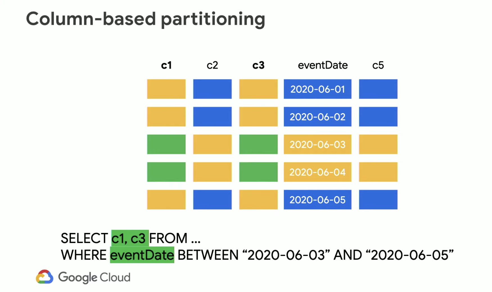
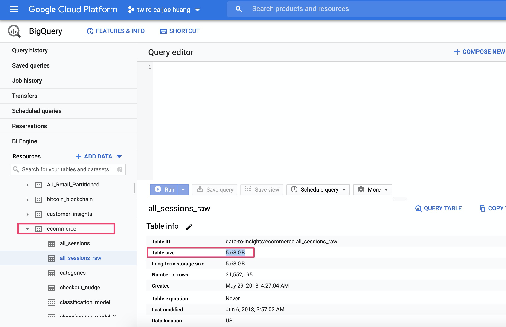
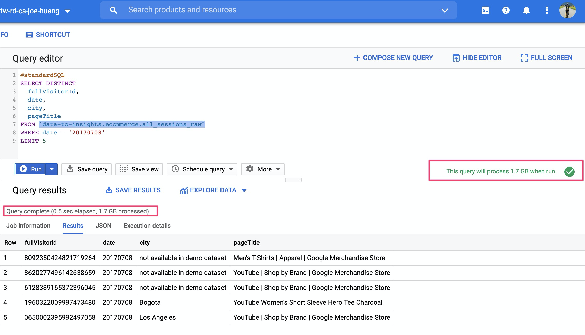
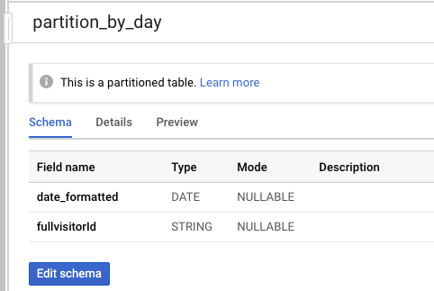
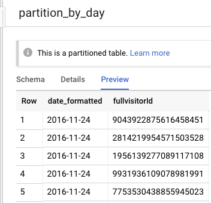
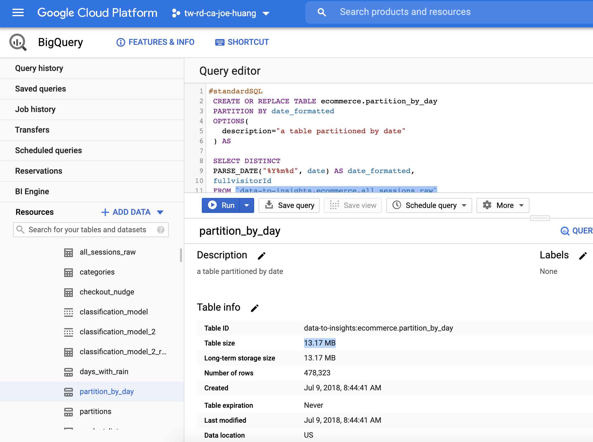
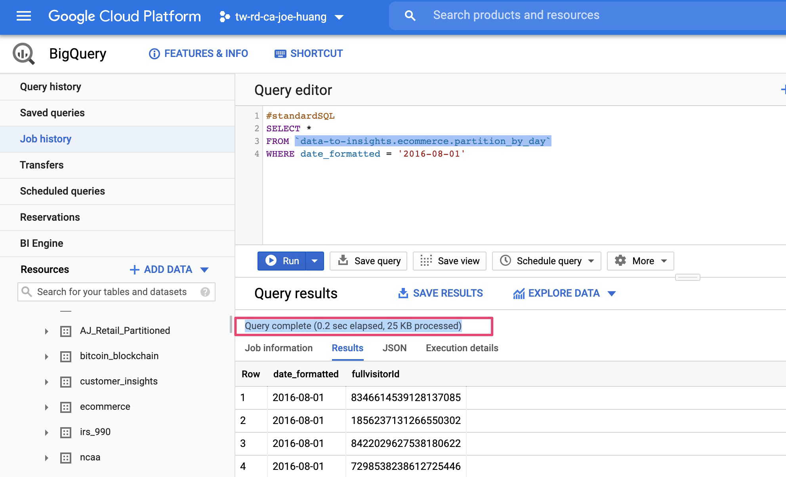

現在數據無處不在，隨著時間的流動，企業內部Datawarehouse數據也跟著正成長，如何使用Partition_table 協助企業用於優化 BigQuery 成本，不僅優化您搜尋效率更可以提升業務成果。
什麼是Partition？
Partitioned table(分區表)是原始table中擷取出來的片段的table，不同於完整的table，我們僅拿我們要的資料。如此可以更簡單管理且加速query的速度，增進了query的速度也是間接首你節省成本，因為BigQuery的計價其中一個項目就是每次query的資料量來計價。
在來我們談談Partition目的。過去SQL query行為是把所有的dataset掃描進來，再透過WHERE篩選條件，如此的行為是非浪費時間和資源的。其實在query 若可以把資料按時間做切片，就可以query特定的資料段，故能節省大量的時間與資源，比如說以下的場景就很適合做時間段的區分
- 上週所有參訪者的意願資料
- 上個月所有的產品的銷售情況
- 週年慶時期 10-11月, Q3旺季出貨
圖解 Partition_table
當我們要查的是c1 c3 colume時，我們會用以下的query
1 | # 因為語法中使用到 `WHERE between 2020-06-03 and 2020-06-05` 所有只會有綠色的block 被存取到 |
2 | # 正是因為做了細部的切分，所以像是黃色和藍色block都不會被touch到，Query就不會有計費，更重詹的是有加速query的作用，colume base partition的好處 |
3 | |
4 | SELECT c1, c3 FROM ... |
5 | WHERE eventDate BETWEEN "2020-06-03" AND "2020-06-05" |
table partition可以是date也可以是integer藍色是指所有的dataseteventDate是標試時間的地方

Partition的好處
最後總結一下，使用partition的好處有項
行為 = select WHERE date ≥"20200602"
- 得到更輕量的table(你也可以想像成不用在做sharding)
Schema更一致- 更快的
Query - 更少的
metadata overhead - 重要就是更少的費用
Partition實作
step1. Create a new partitioned table based on date
- 先從Google 公開資料上取得table，
data-to-insights.ecommerce，其中ecommerce為datasetall_sessions_raw為table
- 得到table後，我們取原data 之中已經即有
schema:date，當作是partition 切割的基準PARTITION BY date_formatted: 我們指定date當作切割的基準ARSE_DATE("%Y%m%d", date) AS date_formatted
- 最後生成一個新的table
- ecommerce.partition_by_day
1 | #standardSQL |
2 | CREATE OR REPLACE TABLE ecommerce.partition_by_day |
3 | PARTITION BY date_formatted |
4 | OPTIONS( |
5 | description="a table partitioned by date" |
6 | ) AS |
7 | |
8 | SELECT DISTINCT |
9 | PARSE_DATE("%Y%m%d", date) AS date_formatted, |
10 | fullvisitorId |
11 | FROM `data-to-insights.ecommerce.all_sessions_raw` |
檢視原始資料 Table size顯示5.63GB

step2. General Query with WHERE
這次的SQL query行為是把所有的dataset掃描進來，再透過WHERE篩選條件，一共scan 1.7GB 資料，執行時間為0.5 sec

step3. 執行結果: review partition_table
- Schema

- Preview
可看到多一個我們建立的schemadate_formated

- Details
- Table size: 只有13.17MB
- Table type: Partitioned

step4. 實測Query partition
- 本次的Query 針對新建的partition_table
data-to-insights.ecommerce.partition_by_day
1 | #standardSQL |
2 | SELECT * |
3 | FROM `data-to-insights.ecommerce.partition_by_day` |
4 | WHERE date_formatted = '2016-08-01' |
- 結果非常驚人，Query results in
0.2s，時間足足快了一倍！ - 為什麼這麼快呢，因為只跑了25KB的data

結論
Partition_table在 BigQuery 中是重要優化成本的作法，如果你已經使用BigQuery一段時間了，且對自已資料有一定的掌握度，開始加入date吧，多一個維度切割你的資料，您就不用為了成本跟效能妥協了。